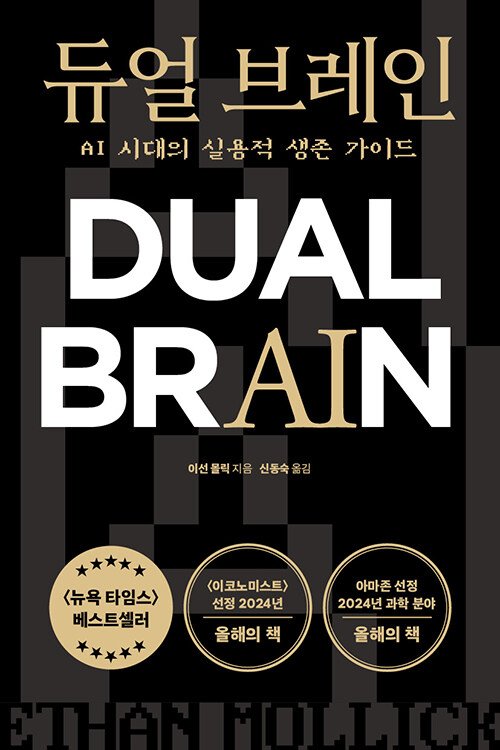

이 책은 미국 와튼 스쿨(Wharton School)의 경영학 부교수이자 〈One Useful Thing〉 뉴스레터로 유명한 이선 몰릭(Ethan Mollick)이 쓴 생성형 AI 실용 가이드의 결정판이다. 〈If Anyone Builds It, Everyone Dies〉가 초지능의 위험성을 경고하는 책이라면, 이 책은 그 정반대 입장에 있다 — 지금의 AI를 어떻게 일상·일·교육·창작에서 효과적으로 활용할 것인가에 대한 매우 구체적이고 실용적인 안내서.
핵심 명제는 한 마디로 요약된다. AI는 적도 아니고 도구도 아니다 — 함께 일할 동료(co-intelligence)다. 저자는 GPT-4 사전 사용 권한을 받은 뒤 사흘 밤을 잠 못 이루며 깨달은 직관에서 출발해, 챗봇이 단순한 신기한 장난감이 아니라 증기기관·전기·인터넷에 비견되는 범용 기술(General Purpose Technology)임을 보인다.
그러나 단순한 낙관론은 아니다. 저자는 AI를 "외계 지성(alien mind)"이라고 부른다 — 인간처럼 보이지만 인간이 아닌, 어떤 일은 박사처럼 잘하면서 다른 일은 어린아이만도 못한 "들쭉날쭉한 능력 경계(Jagged Frontier)"를 가진 존재. 이 외계 지성과 어떻게 협업해야 하는지에 대한 네 가지 실천 원칙과 여섯 가지 역할 모델을 제시한다.
한국어판은 〈AI, 신의 탄생 인간의 종말〉과 같은 출판사인 상상스퀘어에서 2025년 3월에 출간됐고, 출간 직후 교보문고·예스24·알라딘에서 2주 연속 종합 베스트셀러 1위를 기록했다. AI 실무 활용서로는 가장 영향력 있는 책 중 하나로, 학계·기업·정책 결정자 모두가 추천한다.
저자가 GPT-4 사전 사용 권한을 받은 뒤 사흘간 잠 못 이룬 그 충격에서 책이 시작된다.
"생성형 AI는 적인가? 친구인가? 도구인가? 책의 답은 — 동료(co-intelligence)다. 그리고 우리에겐 이 새로운 종류의 동료와 일하는 법을 배울 시간이 그리 많이 남지 않았다."
AI가 무엇이며, 왜 그것을 '동료'로 다뤄야 하는지에 대한 이론적 토대.
트랜스포머와 LLM이 어떻게 만들어졌고, 왜 우리가 그것을 완전히 이해하지 못하는가.
AI 정렬 문제 — 장기적 위험과 즉각적 윤리 문제를 함께 다룬다.
책의 가장 실용적인 부분. 모든 사용자가 따라야 할 네 가지 규칙.
이 네 가지 원칙은 책의 가장 자주 인용되는 부분이며, 후반부 모든 챕터의 토대가 된다. 저자는 이 규칙들이 단순해 보이지만, 실제로 지키기는 매우 어렵다고 강조한다.
모든 작업, 모든 결정, 모든 글쓰기에 AI를 참여시켜 보라. 처음부터 "이건 AI가 할 수 없을 거야"라고 단정 짓지 말고 일단 시도하라. AI의 능력 경계는 직접 부딪혀봐야 알 수 있다. 시도해 본 뒤에 안 된다면 그건 의미 있는 데이터다. 시도조차 안 했다면 모를 뿐이다.
이 원칙은 곧 "Jagged Frontier(들쭉날쭉한 경계)"를 매핑하라는 권고이기도 하다. AI는 어떤 일은 박사 수준으로 하고, 다른 일은 초등학생만도 못한다. 그리고 이 경계는 직관과 다르다 — 고급 분석을 잘하면서 단순 산수에서 틀리는 식. 직접 써봐야 어디까지 믿을 수 있는지 알 수 있다.
AI 출력을 그대로 신뢰하지 말라. 항상 검증하라. AI는 그럴듯한 거짓말(환각)을 자신만만하게 생성하는 경향이 있다. 인용 출처, 사실관계, 논리적 연결고리를 사람이 확인해야 한다.
이는 단순한 '품질 관리' 이상의 의미가 있다. 인간의 비판적 판단·도덕적 책임·맥락적 이해는 AI가 대체할 수 없는 영역이다. AI를 시킨 결과의 책임은 결국 사람이 진다 — 그러므로 그 결과를 승인할 자격이 있는 사람만이 그 일에 AI를 써야 한다.
AI에게 페르소나를 부여하면 결과가 극적으로 달라진다. "당신은 30년 경력의 경영 컨설턴트다"라고 시작하는 프롬프트와 그냥 질문하는 프롬프트의 결과는 완전히 다르다. AI는 본질적으로 역할극을 잘 하는 시스템이고, 적절한 역할이 주어지면 그에 맞는 사고 패턴을 활성화한다.
구체적 페르소나, 청자, 톤, 목적을 모두 명시하라. "마케팅 카피를 써줘" 보다 "10년차 IT 마케터로서 20대 후반 직장인 독자에게 친근하고 실용적인 톤으로 200자 이내의 카피를 써줘"가 훨씬 좋은 결과를 낸다.
주의: 사람처럼 대하라는 말은 사람으로 믿으라는 말이 아니다. 페르소나를 부여하되, 실수와 환각을 사람의 그것보다 훨씬 자주 의심해야 한다.
AI 능력은 6개월~1년 단위로 도약한다. 지금 GPT-4가 못하는 일이 1년 후 GPT-5에서는 쉬울 수 있다. 그러므로 한 번 시도해 실패했다고 영구히 단정 짓지 말라. 지금이 최저점이다.
반대 함의 — 지금 AI가 할 수 있는 일의 범위를 너무 좁게 잡지도 말라. '아직 부족한 부분'에 너무 집중하면 '이미 충분한 부분'을 놓친다. 보통의 직장인이 해야 할 작업의 절반 이상은 이미 현재의 AI로 더 빠르고 더 좋게 처리할 수 있다.
그리고 가장 중요한 함의 — 지금 익숙해져야 한다. 1년 후 10배 강해진 AI를 그때 처음 만나면 너무 늦다. 지금의 부족한 AI로 연습해 두어야, 진짜 강한 AI가 왔을 때 활용할 수 있다.
이 개념은 책에서 가장 자주 인용되는 비유다. AI의 능력은 매끄럽고 균일한 경계가 아니라 들쭉날쭉하고 비대칭적인 경계를 가진다.
같은 AI도 어떤 관계로 대하느냐에 따라 다른 일을 한다. 여섯 가지 역할 모델.
AI는 사람이 아니다. 그러나 우리는 그것을 사람처럼 대할 수밖에 없다.
AI의 환각은 사실에선 약점이지만 창의성에선 강점이다.
BCG 컨설턴트 758명을 대상으로 한 충격적 실험. 그리고 켄타우로스 vs 사이보그.
| 지표 | AI 사용 그룹의 향상 | 의미 |
|---|---|---|
| 완료한 과제 수 | +12.2% | 같은 시간에 더 많은 일을 처리 |
| 완료 속도 | +25.1% | 각 과제를 25% 더 빠르게 |
| 품질 | +40% | 외부 평가자 점수 기준 — 단순 양적 향상이 아니라 질적 향상까지 |
| 하위 성과자 향상 | +43% | 능력이 부족한 사람일수록 가장 큰 향상 |
| 상위 성과자 향상 | +17% | 능력이 좋은 사람도 향상되지만 격차는 좁혀진다 |
| 켄타우로스 (Centaur) | 사이보그 (Cyborg) | |
|---|---|---|
| 비유 | 인간 상체 + 말 하체. 두 부분이 분리된 채 결합 | 유기체와 기계가 한 몸으로 융합 |
| 작업 분배 | 작업을 단위로 명확히 분리해 인간 또는 AI에게 할당 | 작업 안에서 인간과 AI가 단계마다 끼어들어 협업 |
| 예시 | "이 글의 초안은 AI가 쓰고, 편집은 내가 한다" | "한 문단 쓰고 AI가 다듬고, 다음 문단 쓰면서 다시 의견 묻고…" |
| 장점 | 책임 경계가 명확. 검증이 쉬움 | 각 단계의 강점을 즉시 활용. 결과물이 더 풍부 |
| 단점 | 경계에서 비효율 발생 | 인간이 어디서 자기 사고가 끝나고 AI 영향이 시작됐는지 모를 수 있음 |
| 적합한 작업 | 책임이 명확해야 하는 일 (법률, 의료) | 창의적 작업, 탐색적 분석 |
개인 튜터의 효과를 모두에게 — 1984년 블룸의 '2 시그마 문제'를 AI가 풀 수도 있다.
1984년 교육학자 벤저민 블룸은 학생을 세 그룹으로 나눠 비교한 연구를 발표했다.
2 시그마 향상이 무엇인가? 평균 학생을 상위 2%로 끌어올리는 효과다. 블룸은 이것을 보고 충격을 받아 "어떻게 하면 일반 교실에서도 1:1 튜터링과 비슷한 효과를 낼 수 있을까?"라는 질문을 던졌다. 이것이 그 유명한 '2 시그마 문제'다. 40년이 지나도록 이 문제는 풀리지 않았다 — 1:1 튜터를 모든 학생에게 제공할 자원이 없기 때문이다.
그런데 AI가 그것을 가능하게 할 수 있다. 끝없이 인내심 있고, 학생의 속도에 맞추고, 24시간 사용 가능하고, 비용이 거의 들지 않는 개인 튜터. 이 잠재력이 7장 전체를 떠받친다.
전문성 발달의 위기 — '도제 격차'와 그 해법.
네 가지 시나리오로 본 AI의 미래 — 그리고 저자가 가장 가능성 있다고 보는 것.
저자는 미래를 단정적으로 예측하지 않는다. 대신 네 가지 시나리오를 제시하고, 각각의 사회적 함의를 따져본다.
| 시나리오 | 이름 | 의미 |
|---|---|---|
| ① 정체 | As Good As It Gets (여기까지가 끝) |
현재의 GPT-4 정도가 사실상 정점. 더 큰 모델은 한계 효용 체감으로 큰 도약 없음. AI 영향은 제한적이고 점진적이며, 사회는 천천히 적응할 시간을 갖는다. |
| ② 점진 | Slow Growth (완만한 성장) |
무어의 법칙처럼 일정한 속도로 능력이 향상. 매년 의미 있는 향상이 있지만 폭발적이지는 않음. 사회 제도와 노동시장이 적응할 여유가 있음. |
| ③ 폭발 | Exponential Growth (기하급수적 성장) |
능력이 6개월~1년마다 도약. 대규모 노동시장 충격, 자동화의 빠른 확산. 사회 적응이 따라가지 못해 마찰과 불평등 심화. |
| ④ 신 | The Machine God (기계 신) |
AGI 또는 ASI(초지능)의 등장. 인간을 모든 면에서 능가하는 존재가 출현. 결과는 유토피아일 수도, 디스토피아일 수도 있다. 〈If Anyone Builds It, Everyone Dies〉의 영역. |
AI는 결국 우리가 만든 것이다 — 그것은 인간성의 거울.
"AI는 우리를 대체하지 않는다. AI를 잘 쓰는 사람이 그렇지 못한 사람을 대체할 것이다."